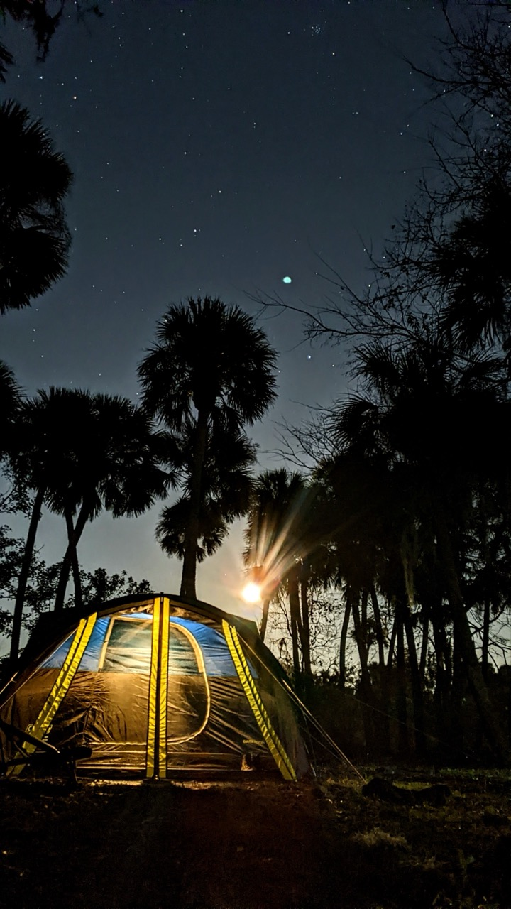
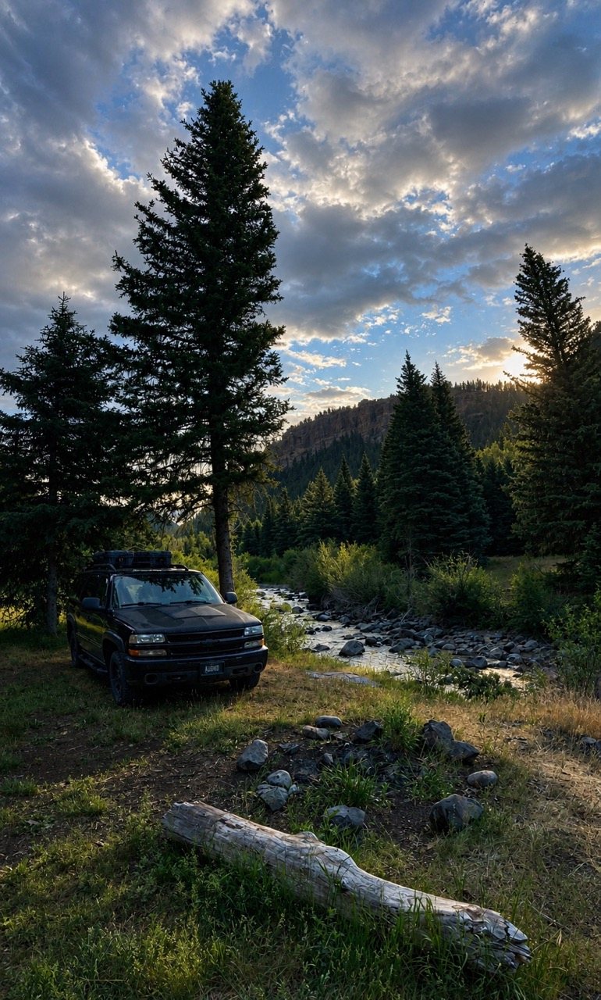
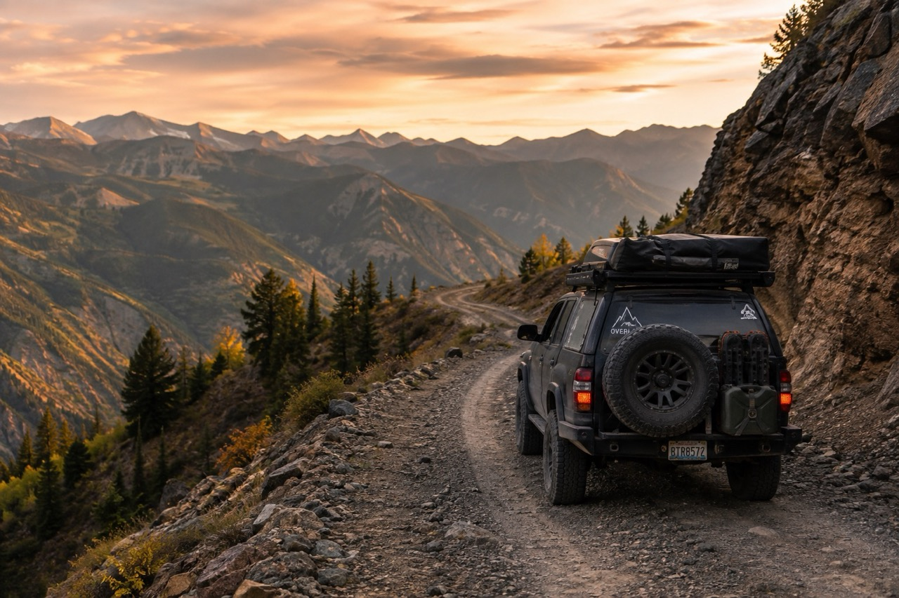

Sensory Information
We document noise, crowds, privacy, light pollution, human activity, traffic, and other environmental conditions that can dramatically change how comfortable a place feels.
About Llama Scout
Llama Scout is a camping and travel resource built around the details that traditional camping apps often leave out. We focus on sensory conditions, privacy, road stress, connectivity, accessibility, vehicle access, and what a place actually feels like when you arrive.

Why We Exist
A campsite can look perfect in photos and still be a terrible place to stay if it sits beside a busy road, has constant generator noise, puts you directly in view of other campers, or requires a stressful drive over narrow shelf roads.
Traditional campground listings usually tell you whether there is a picnic table, fire ring, toilet, or reservation fee. Those things matter, but they do not tell you whether the environment is calm, predictable, private, accessible, or manageable for someone dealing with sensory overload, anxiety, executive dysfunction, mobility limitations, or other access needs.
Llama Scout exists to fill in that missing information.

Our Mission
We document noise, crowds, privacy, light pollution, human activity, traffic, and other environmental conditions that can dramatically change how comfortable a place feels.
Road difficulty is only part of the story. We also track road stress, rocks, washboards, drop-offs, vehicle length, turnaround space, leveling requirements, and whether a normal passenger car can realistically reach the site.
Cell service, carrier performance, open sky, and Starlink visibility can matter just as much as water or toilets for people traveling long-term or working remotely.
We want to document practical accessibility instead of relying on vague labels. That includes walking surfaces, mobility-device access, distance from parking, terrain, toilets, and how usable a site is in the real world.
What Makes Llama Scout So Different
Whenever possible, places are documented from firsthand visits, including what the site actually felt like during the day and at night.
Some places are noisy and exposed during the day but become quiet, dark, and comfortable overnight. We treat those as different conditions instead of forcing everything into one overall score.
We use simple 1 to 5 ratings for things like road difficulty, noise, privacy, sensory comfort, cell service, and scenery, while keeping detailed notes available for context.
Sensory comfort, social interaction, environmental predictability, privacy, and decompression value are core parts of the data model, not optional accessibility notes hidden at the bottom of a page.
Our Approach
Conditions change. Roads wash out. Trees fall. Cell towers improve. Campsites close. Fire restrictions come and go.
Llama Scout is designed around that reality. We separate firsthand observations, public information, and unknown data so we do not pretend to know more than we do.
If something has not been verified, it should say so. If a place has drawbacks, those should be visible too. The goal is not to make every campsite look amazing. The goal is to help someone decide whether it works for them.

Where This Is Going
Llama Scout is still growing. The map will expand as more locations are visited, researched, and documented.
Over time, the goal is to include more campsites, dispersed areas, trailheads, scenic stops, rest areas, and other useful places for travelers who want more information before deciding where to go.
Community submissions and member tools can eventually help expand the database while still preserving clear verification standards.